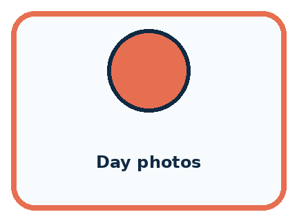
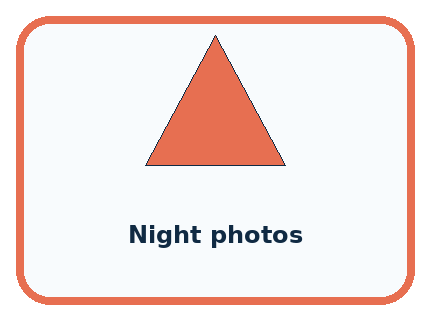
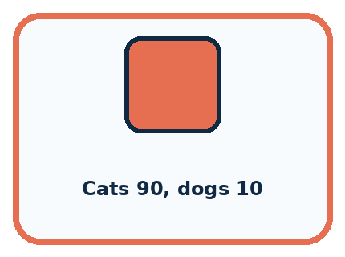
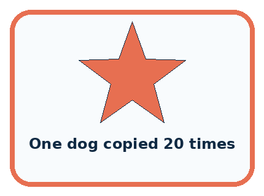

AI Academy · Level 1 · Grade 6 · Week 22 · Student lesson
Missing and Unbalanced Examples
Learn to understand, design, build, test and explain AI systems responsibly.
Project: Helpful Classroom Sorter
THE CONNECTED WEEK
Count distinct cases. Inspect the missing conditions.
Name target collections, inspect selection frames, compare coverage plans and audit a new sound-recognition claim.
Keep one habit: State the target → inspect crossed conditions → separate selection from assessed outcomes.
Main lesson · Section 1
Which intended cases have actually been checked?
Name the target, selection list, distinct cases and assessed conditions.
Start with more files but the same cards
Twelve image files can still represent only six distinct cards. Count the underlying cases and the conditions they cover before using a large-looking total as evidence.
Retrieve schema validity versus coverage
A table has been checked and every recorded value matches its source. Does that prove it includes all the conditions in which a system will be used? Explain.
Close your notes first. A rough first answer helps us choose the right starting point; it is not a score for your ability.
After trying, check the relevant lesson or ask your teacher. Change the part of your explanation that the evidence shows was wrong.
By the end, you can…
I can name the target collection, selection list and cases actually assessed.
I can use a coverage table to identify missing conditions before making a claim.
I can propose a selection plan that addresses a stated gap without promising certainty.
Earlier wording, alternatives and picture transcripts
Your learning target
Remember before reading
Without opening the old lesson, explain one key idea from Good Data, Bad Data. Give an example and a mistake that the idea helps you avoid.
Without opening the old lesson, explain one key idea from Similarity. Give an example and a mistake that the idea helps you avoid.
Without opening the old lesson, explain one key idea from Boundaries and 'Not Sure'. Give an example and a mistake that the idea helps you avoid.
What is absent can shape a system's failures.

LEARNING TARGET A training set has 18 daylight photos and two dark photos of one object. Adding eight extra copies of each dark photo makes 18 dark-image files, matching the 18 daylight files. Does it balance the variety? Design a better collection step.
Learner name:
Readiness for the connected explanation
This week’s end goal
By the end, I can identify missing conditions and design a targeted coverage check.
Main lesson · Section 2
Separate the target collection from its sample and frame
Shapes24 contains all four shape-by-lighting combinations, each with six distinct IDs.
Read the full target and checked labels
Suppose a shape recogniser will be evaluated on a fixed collection of 24 invented picture cards. This target population has 6 bright circles, 6 dim circles, 6 bright squares and 6 dim squares.
Each card has its own ID and an independently checked circle or square label. We want to know how often the recogniser gives the correct label across these 24 cards.
State the original sample and its limited result
A tester takes the 6 bright-circle cards nearest the front of the box. Those 6 cards form the sample; the other 18 have not been assessed. The recogniser is correct on 5 of the 6 sampled cards.
That is a result for these assessed bright circles. It does not establish correctness on the squares or dim cards.
Inspect the list used for selection
A sampling frame is the list or source available for selection. A complete list of all 24 IDs could give every card a chance of selection.
A list containing only bright-circle IDs cannot select dim cards or squares, even if the choice from that list is random. These fictional picture cards do not contain personal information.
Explain the coverage gap
Name the 24-card target and the original six-card sample. Which cases can a bright-circle-only list never select? Explain why random choice within that incomplete list does not add the missing conditions.
Earlier wording, alternatives and picture transcripts
PICTURE STORY
Look Closely Before You Explain
Pictures give clues; evidence tells us what the clues mean.

MYSTERY An animal recognizer trained only on bright daytime photos may fail on the same animals at night.
What do you notice?
Name three visible details without explaining them yet.
Circle the detail most connected to the system's decision.
Name one detail that may be decoration or distraction.
Make a first prediction and state the clue that supports it.
My observations, prediction, and evidence:
GOOD THINKING A prediction can change when stronger evidence appears.
A closer explanation
Main lesson · Section 3
Check combinations as well as individual labels
Having both shapes and both lighting labels somewhere can still leave crossed conditions absent.
Read the condition-by-condition coverage
Coverage is about cases as well as counts
Distinguish image files from underlying card IDs
The target has 24 distinct cards, but the sample covers only the 6 bright circles. Photographing each sampled card twice would create 12 image records without adding a new card or covering a missing condition.
Record the identity of the underlying case as well as the number of files.
Inspect the missing combinations
Both shape and lighting matter to this question. A sample with bright circles and dim squares includes each shape and each lighting label, yet still misses dim circles and bright squares.
Check combinations when the interaction could matter, not just whether each individual label appears somewhere.
Explain a table entry
Point to the input, the deciding step and the result in this week’s visual. Explain the same step in ordinary words. A picture helps when you can say what each part represents.
Earlier wording, alternatives and picture transcripts
VISUAL MECHANISM
Input → Process → Output
Follow the information instead of imagining magic inside the machine.


INPUT example set with represented and absent conditions
PROCESS learn patterns from available coverage
OUTPUT uneven performance across conditions
CORE IDEA What is absent can shape a system's failures.
UNDER THE HOOD Sampling imbalance changes the empirical distribution seen during training. Missing subgroups or conditions cannot contribute error signals, so average success may hide systematic failure.
Rebalancing requires relevant examples, not arbitrary duplication alone.
Draw a fresh example with all three stages:
A closer explanation
Connect the picture and the explanation
Main lesson · Section 4
Compare coverage and variety clues
Ask which new conditions and distinct cases an added record actually contributes.
Pictures paired with their evidence


The case to investigate
CASE 1 — Day photos Clue: many clear examples. Meaning: strong represented condition.


The case to investigate
CASE 2 — Night photos Clue: none available. Meaning: coverage gap.


The case to investigate
CASE 3 — Cats 90, dogs 10 Clue: uneven class counts. Meaning: class imbalance.


The case to investigate
CASE 4 — One dog copied 20 times Clue: count rises, variety does not. Meaning: weak repair.
Discuss the confusing pair
Which two pictures are easiest to confuse? What evidence separates them?
Keep the limit in view
BOUNDARY Balance is about useful representation, not forcing every count to be identical without reason.
Earlier wording, alternatives and picture transcripts
PICTURE GALLERY
Four Cases, Four Clues
Use the visual cue, then read the evidence carefully.
CASE 1 — Day photos Clue: many clear examples. Meaning: strong represented condition.
CASE 2 — Night photos Clue: none available. Meaning: coverage gap.
CASE 3 — Cats 90, dogs 10 Clue: uneven class counts. Meaning: class imbalance.
CASE 4 — One dog copied 20 times Clue: count rises, variety does not. Meaning: weak repair.
Change one thing in the pictured case
Change: Add the two remaining bright plain cards and no dim cards.
Prediction: The sample becomes larger but still has no dim coverage.
Reason: The missing lighting condition remains untested.
Main lesson · Section 6
A larger bright-only sample still misses dim conditions
This separate Badges32 collection has eight target cards in each lighting-by-pattern group.
The target and development sample
A fictional badge reader will be used in both bright and dim rooms.
Intended target has 8 bright plain,8 bright patterned,8 dim plain,8 dim patterned cards.
A development sample contains 6 bright plain cards and 2 bright patterned cards; no dim cards.
Read the four group counts


Trace the targeted coverage follow-up


Explain why size and coverage differ
Adding more bright cards can increase sample size without addressing the missing condition. A coverage check asks which relevant situations are absent, not merely how many rows exist.
Deliberately selecting dim cases helps investigate those conditions, but the resulting test should not be advertised as a random survey unless its selection really was random.
Predict the larger bright-only sample
Before checking, add the two remaining bright-plain cards to the badge sample and no dim cards. Recount sample size and identify the condition groups that still have zero coverage.
Check the remaining gap


Limit what targeted coverage establishes
Coverage does not guarantee accuracy, and targeted cases alone do not supply a population-wide success estimate.
Inspect whether one dim group is enough
Read the labelled picture: Would testing only dim plain cards close every current gap? Point to the target groups.
Earlier wording, alternatives and picture transcripts
WORKED EXAMPLE
Watch the Reasoning, Not Just the Answer
Every step connects a claim to observable evidence.

CASE An animal recognizer trained only on bright daytime photos may fail on the same animals at night.
STEP 1 — OBSERVE example set with represented and absent conditions
STEP 2 — TRACE learn patterns from available coverage
STEP 3 — CONCLUDE uneven performance across conditions
MODEL REASONING The model may rely on bright backgrounds or fail to detect shapes in low light. Collect varied night examples for every relevant animal and preserve a separate night test set to evaluate the repair.
DO NOT OVERCLAIM Balance is about useful representation, not forcing every count to be identical without reason.
What new evidence could change this answer?
A closer explanation
| Plan | What it helps with | Limit to report |
|---|---|---|
| Take cards at the front | Quick initial check | Front position may restrict conditions |
| Draw from all 24 IDs by chance | Every listed card can be selected | A small draw need not balance conditions |
| Choose 2 distinct cards per condition | Includes all four conditions | 8 cards do not establish all 24 outcomes |
| Assess all 24 distinct cards | Covers this entire fixed collection | Does not prove performance on future images |
For a broad estimate, a chance-based plan should start from a suitable complete list and use a documented selection procedure.
For investigating missing conditions, deliberately selecting cases from each condition can be useful. State which purpose you chose. A set built to expose problems is not automatically a faithful miniature of everyday use.
Selection bias is about a systematic feature of the selection process, not whether a person had bad intentions. Choosing only easy-to-reach, bright cards can leave harder conditions out.
More cases from the same narrow source may repeat that gap. A larger sample cannot by itself repair a frame that excludes relevant cases.
Learn from the worked case
Cover the result before checking it. Say what is given, choose the procedure, and follow one step at a time. Then uncover the result and explain your first mismatch. Ask why a step is allowed, not only what number it produces.
A pictorial worked case: Missing and Unbalanced Examples
The facts we will use


Read the picture one step at a time
Why this result follows
What this example does not establish
Change one thing: Add the two remaining bright plain cards and no dim cards. Predict the result before checking the explanation. What remains the same?
Main lesson · Section 7
Report the target and the reach of the evidence
State the assessed cases, absent conditions and selection method.
Keep the original five-of-six result bounded
A careful report identifies the target, frame, selection method, distinct cases, assessed outcomes and gaps.
For the original sample: 5 of 6 selected bright-circle cards were correct; the 18 cards in other conditions were not assessed. This is useful evidence with a narrow reach, not a score for all future images.
Revisit coverage when the intended use changes
Even checking all 24 cards answers a question about that fixed collection and that recogniser version. New image sources, different lighting or other shapes introduce new cases.
Revisit the target and the coverage plan when the intended use changes.
Repair the 100-more-bright-images claim
CLAIM A A model can infer missing conditions automatically.
CLAIM B Copying rare examples many times creates new variety.
STRONG ANSWER FRAME I claim ______ because the evidence shows ______. The process is ______. One limit is ______.
Earlier wording, alternatives and picture transcripts
COMPARE
Same Result, Different Reason
A comparison helps reveal the true concept boundary.
| Case | Evidence | What it shows |
|---|---|---|
| Day photos | many clear examples | strong represented condition |
| Night photos | none available | coverage gap |
| Cats 90, dogs 10 | uneven class counts | class imbalance |
| One dog copied 20 times | count rises, variety does not | weak repair |
Repair two tempting claims
Repair:
Repair:
A closer explanation
Main lesson · Section 8
Practise: selected is different from assessed
An unavailable file is recorded separately when the stated task measures recognition correctness only.
Inspect the eight-selected, seven-assessed example
Imagine a new plan selects 2 distinct cards from each of the four conditions: 8 cards in total. One selected dim-square file cannot be opened. Only 7 have assessed outcomes.
Record the missing file and its condition; do not call it a recognition error or pretend all 8 outcomes were checked. This exercise evaluates recognition only, so file availability is reported separately.
Rewrite the original overly broad claim
Keep coverage separate from test independence
Choose and document cases before seeing their outcomes. If you use the results to revise the recogniser, keep a separate unseen final test as in Week 15.
Coverage and an unseen test solve different problems: one asks which conditions appear; the other asks whether the evaluation cases influenced the revision.
Use W2 to count distinct cards
Use workbook W2 for the connected example “Sampling and coverage”. First fill the input and rule boxes. Try the middle steps before asking for a hint. After a hint, try the next step yourself.
| Plan | Do | Check |
|---|---|---|
| What is given? Which rule or procedure applies? | Record each intermediate step. | Does the result follow? What remains unknown? |
Explain your trace to a partner. Your partner points to one step to check. Swap roles on the next case. Each person writes their own explanation.
Challenge “more records always remove bias”
Use the worked case for Sampling and coverage. Proposed explanation: “More records always remove bias”. Decide whether this explanation is supported.
Point to the step or supplied fact that decides; explain your repair if needed.
Answer on your own before discussion. If you are unsure, say which step you need help with.
Return to the two dim badge groups
Would testing only dim plain cards close every current gap? Point to the target groups.
This is supported practice. Keep the separately named independent case for an attempt before feedback.
Earlier wording, alternatives and picture transcripts
GUIDED PRACTICE
Try It, Check It, Explain It
Use support now so you can succeed independently later.

Explain how the picture story demonstrates this idea: What is absent can shape a system's failures.
Use a fresh example to explain missing example.
Trace a new input → process → output example.
Find and repair the error in: Copying rare examples many times creates new variety.
Invent one edge case and name the safe response.
PARTNER CHECK Point to the evidence. Do not accept an answer that only repeats the vocabulary word.
A closer explanation
Practise with less help: Separate files from distinct cases
Check your reasoning
Explain the picture
Main lesson · Section 9
Investigate missing animal-photo conditions
Use a complete fictional target list and distinguish a coverage plan from observed model performance.
The target IDs and development coverage
Use a fictional 12-card animal target with supplied reference labels. Conditions and distinct IDs are day fox FD1–FD3, night fox FN1–FN3, day owl OD1–OD3, night owl ON1–ON3. Development used the six day cards only. Recognition outcomes for the six night cards have not been obtained. Repeated copies keep the same underlying card ID.
Compare copies with new condition coverage
Predict which conditions need investigation without declaring their recognition outcomes in advance. Make a coverage table. Compare adding six copies of day cards with reserving two distinct night-fox and two distinct night-owl IDs for a targeted check of the frozen recognizer. State exactly what the selection plan checks, which night IDs remain unused, and which outcomes are still unknown. Label this paper work as a selection audit, not a completed recognition experiment.
Keep a normal case and an edge case clearly separated.
Record what happened—even when it does not match your prediction.
Explain the result, one limitation, and the next useful test.
Keep selection, assessment and unknown outcomes separate
| Case | Prediction | Observed result | What it means |
|---|---|---|---|
| Normal | |||
| Edge |
Before trying: what do I expect, and why? While trying: which step could first go wrong? Afterwards: what did I actually observe, and what should change? Keep “not run” if you only traced the procedure.
Earlier wording, alternatives and picture transcripts
EXPLORER LAB
Missing-Condition Detective
Predict first, test honestly, and explain what the evidence means.

State your prediction before the result is known.
Complete the task: Predict failures in an animal set missing night photos.
INDEPENDENCE After support is removed, repeat the proof with a fresh case.
Plan → try → check
Main lesson · Section 14
Try alone: audit the new sound-recognition claim
Audit the original result and propose a labelled coverage investigation; record any reused clip IDs.
The new target, sample and requested plan
A fixed target has 20 invented clips: 5 quiet bells, 5 noisy bells, 5 quiet claps and 5 noisy claps. A tester selects 4 distinct quiet bells from a quiet-bell-only list; 3 are correctly labelled and 1 is wrong.
Write a supported result, name missing conditions and explain why the result is not established for all 20 clips. Propose an 8-clip plan that includes every condition, with no clip selected twice.
Keep one first attempt
Attempt this case before feedback. Record any help. Earlier examples below are further practice; a case already practised with feedback cannot establish fresh transfer.
Your teacher has the independent answer and scoring criteria. Complete the matching workbook week to keep your practice evidence together.
Use feedback afterwards
Attempt the independent case before hints. Record whether you worked alone, used a hint or followed a model. After feedback, fix the first unsupported step and explain why it changed.
A later check uses a changed case, not a copied answer.
Earlier wording, alternatives and picture transcripts
Independent case: Audit a new sound-recognition claim
Week 22 Independent application
Close the worked explanation. Apply the idea to this different question without copying.
A photo sorter trains on ten bright photos and no dim photos. What group of examples is missing? Design a test that reveals the gap.
My answer, with a trace, calculation or supporting evidence
Create and test
Change one relevant detail. Predict the result before testing. Include a boundary or missing-information case when it helps reveal a limit.
My changed input and expected result
Connect to your project
List normal, low-light, partly hidden, worn, and unusual items; mark which conditions are missing from the sorter data.
The evidence I will keep
Transfer practice from the original programme
A training set has 18 daylight photos and two dark photos of one object. Adding eight extra copies of each dark photo makes 18 dark-image files, matching the 18 daylight files. Does it balance the variety? Design a better collection step.
Use feedback to improve
Main lesson · Section 11
Build a crossed-condition coverage table for your sorter
List important conditions, distinct IDs and the groups actually assessed.
This week’s project decision
THIS WEEK'S CHECKPOINT List normal, low-light, partly hidden, worn, and unusual items; mark which conditions are missing from the sorter data.
Create a sorter coverage table crossing important classroom conditions, then state which groups each test actually represents.
Plan conditions, selections and checks
What real classroom need does this serve?
What information is necessary—and what should stay private?
What happens inside the process?
What normal and edge cases will you test?
When should it say not sure or ask a person?
Choose representation for the stated purpose
RESPONSIBLE DESIGN Balance is about useful representation, not forcing every count to be identical without reason.
Earlier wording, alternatives and picture transcripts
PROJECT
Helpful Classroom Sorter
Build one coherent system across the year, one evidence-based decision at a time.


My project decision:
Evidence for your project
Main lesson · Section 16
Finish: name what the evidence does and does not cover
Close your notes and identify the target, frame, distinct selected cases and assessed outcomes.
Your exit explanation
Close your notes. Explain this goal in your own words: Name the target collection, selection list and cases actually assessed
Choose support and revisit later
If you are unsure, return to the worked picture and explain one arrow. If you are ready, change an input or assumption and justify your prediction.
Save your workbook evidence. At the next review, try a different case before opening your old answer.
Reference bank and extra practice
Choose the reference that helps your next step.
Your quick word guide
Reference · Section 5
Your quick word guide
Use the words to explain a particular step, record or limit.
Core vocabulary
| Word | Meaning | My example |
|---|---|---|
| missing example | needed condition absent from data | |
| imbalance | some groups appear much more than others | |
| subgroup | defined part of the intended population | |
| coverage gap | important situation poorly represented |
Terms for the connected explanation
| Word | Meaning |
|---|---|
| Target population | The whole collection of cases a question is about |
| Sample | The selected cases used to investigate a larger collection |
| Sampling frame | The list or source from which cases can be selected |
| Coverage | Which relevant kinds of cases the list or sample includes |
| Selection bias | Systematic distortion caused by how cases enter an investigation |
Repair a claim using a word
CLAIM TO REPAIR A model can infer missing conditions automatically.
Use one vocabulary word and one piece of evidence to repair it:
Earlier wording, alternatives and picture transcripts
VOCABULARY
Words You Can See and Use
The badge is a memory cue; the definition does the real thinking work.


Misconception detective
WORD POWER A strong definition helps you decide something in a new case.
Words used in the closer explanation
Choose a stronger thinking challenge
Reference · Section 10
Choose a stronger thinking challenge
Choose the next useful challenge rather than treating the whole ladder as compulsory.
Pick your next step
RECALL Define missing example.
EXPLAIN What is absent can shape a system's failures.
TRACE Show the input, process, and output.
DIAGNOSE Repair: A model can infer missing conditions automatically.
TRANSFER Apply the idea to a new home or classroom case.
CREATE Design one revealing test.
DEFEND Give a claim, evidence, mechanism, limit, and safe action.
Earlier wording, alternatives and picture transcripts
PRACTICE LADDER
Climb from Recall to Defense
Each step asks for a stronger kind of understanding.

RETRY RULE A coached answer becomes mastery only after you solve a different case independently.
Reference: check your explanation
Reference · Section 12
Reference: check your explanation
Use after practice. Audit a new sound-recognition claim is the selected independent case.
Check the evidence and its limit
□ Name or draw the fresh case.
□ Trace input, process, and output.
□ State the conclusion and strongest evidence.
□ Name one limit, failure, missing clue, or fairness/privacy concern.
□ Explain one safe next action or improvement.
Record support
My level: □ Not yet □ With one hint □ Independently □ I can teach it
Earlier wording, alternatives and picture transcripts
MASTERY
Checklist for explaining this week’s idea
Use after practice. Audit a new sound-recognition claim is the selected independent case.

EXPLANATION CHECK Name the target and frame, count distinct cases and crossed conditions, distinguish selected from assessed outcomes and explain the purpose and limits of a follow-up plan.
Independent evidence:
SELF-CHECK The model may rely on bright backgrounds or fail to detect shapes in low light. Collect varied night examples for every relevant animal and preserve a separate night test set to evaluate the repair.
NEXT BRIDGE Carry today's evidence habit into: Fair for Whom?.
Extra practice: Training examples can leave gaps
Reference · Section 13
Extra practice: Training examples can leave gaps
Try the question before opening its worked explanation.
Read the supplied case and question
Training includes nine daylight leaf photos and one low-light photo.
What intended-use gap is present?
Your explanation
Which detail supports the answer, and why does it matter?
Check after trying
Low light is poorly represented. Add varied, correctly labelled low-light examples if that use is intended. Copies of one photo do not add equivalent variety.
| Evidence or stage | Value or result |
|---|---|
| Daylight photos | 9 |
| Low-light photos | 1 |
Earlier wording, alternatives and picture transcripts
Week 22 Worked case
Use the supplied details to practise the weekly concept before attempting the independent question. This case extends the illustrated lesson.
The situation
The question
Worked explanation
Explain it in your own words
Trace the supplied case visually
Training examples can leave gaps
Training includes nine daylight leaf photos and one low-light photo.
What intended-use gap is present?
Low light is poorly represented. Add varied, correctly labelled low-light examples if that use is intended. Copies of one photo do not add equivalent variety.
Reference: original lesson checklist
Reference · Section 15
Reference: original lesson checklist
Use an additional checklist when it helps inspect your explanation.
Targets and evidence
| By the end, I can | How I will show it |
|---|---|
| Name the target collection, selection list and cases actually assessed | Explain the deciding step, show a trace or test, and state one limit. |
| Use a coverage table to identify missing conditions before making a claim | Explain the deciding step, show a trace or test, and state one limit. |
| Propose a selection plan that addresses a stated gap without promising certainty | Explain the deciding step, show a trace or test, and state one limit. |
Keep your route and first prediction
Remember → watch and explain → try with help → investigate → try independently → keep project evidence. Your teacher may spread this lesson across several classes.
Keep your first prediction. Compare it with what the evidence shows and explain any change.
Earlier wording, alternatives and picture transcripts
Start with this question: A fictional badge reader will be used in both bright and dim rooms.
Extra practice: pictures, repair and feedback
Reference · Section 17
Extra practice: pictures, repair and feedback
Attempt each question before opening its explanation. Use one browser or paper copy.
First supported question
A fictional badge reader will be used in both bright and dim rooms.
Which labelled step matches this detail? Select and record new cases from both dim groups before claiming coverage.
1. Target conditions
2. Current sample
3. Targeted follow-up
4. Coverage gap
Hint if needed: Read the steps in the pictorial case. Match the supplied detail to the stage that performs or records it.
Practice 1: explain the deciding evidence
Check the first explanation
After your attempt, compare with the supported explanation: Targeted follow-up Select and record new cases from both dim groups before claiming coverage.
Adding more bright cards can increase sample size without addressing the missing condition. A coverage check asks which relevant situations are absent, not merely how many rows exist.
Deliberately selecting dim cases helps investigate those conditions, but the resulting test should not be advertised as a random survey unless its selection really was random.
Changed-case question
Changed-case practice: Add the two remaining bright plain cards and no dim cards. Which conclusion is supported by the supplied facts?
1. This one example guarantees correct results for every future input.
2. We can decide the result without examining the changed input or the procedure.
3. The sample becomes larger but still has no dim coverage.
Hint if needed: Use the changed condition and the deciding step in the pictorial trace. The answer must say what follows from those facts.
Practice 2: explain the deciding evidence
Check the changed case
After your attempt, compare with the supported explanation: The sample becomes larger but still has no dim coverage. The missing lighting condition remains untested.
Repair and save your work
Review Good Data, Bad Data (ai-1/21). Goal: Check records against a stated format, unit and meaning before using them. Short practice: Which repairs are evidence-backed in the original case, and which row must remain unknown?.
Return to this week and explain what you changed.
Review Similarity (ai-1/19). Goal: Calculate similarity using explicitly selected features and a stated scoring rule. Short practice: Point to the matches supporting C’s new score and explain why there is no tie..
Return to this week and explain what you changed.
Review Boundaries and 'Not Sure' (ai-1/16). Goal: Identify a specific source of uncertainty and explain how it affects a prediction. Short practice: Which original block needs a better width before accepting or rejecting it?
What should the reviewer do?. Return to this week and explain what you changed.
Use Download completed work in the hosted lesson to export your answers, reflections, practice feedback and code-run evidence. Open the HTML copy to read or print it.
Drafts stay in this browser when storage is available; clear drafts on a shared device.
Earlier wording, alternatives and picture transcripts
Use this supported practice once, in the browser or on paper. Keep the reserved independent assessment for a separate first attempt before teacher feedback.
Repair a missing building block
Keep your completed work
Reference: the six-picture journey
Reference · Section 18
Reference: the six-picture journey
Revisit the picture that serves the current question; key diagrams already sit beside the main explanation.
01. Missing and Unbalanced Examples: the case


A fictional badge reader will be used in both bright and dim rooms. Supplied facts: Intended target has 8 bright plain,8 bright patterned,8 dim plain,8 dim patterned cards.
A development sample contains 6 bright plain cards and 2 bright patterned cards; no dim cards.
Point to the given fact that matters most. Explain why it matters.
02. Follow the deciding steps
Target conditions: Four lighting-by-pattern groups, eight target cards each. → Current sample: Eight bright cards only; dim groups have zero coverage. → Coverage gap: Current results cannot describe dim-room reading. → Targeted follow-up: Select and record new cases from both dim groups before claiming coverage.
Point to each numbered stage and explain which recorded input it uses.
03. Target groups and development coverage
Target groups and development coverage. Bright plain: Target cards = 8, Sample cards = 6. Bright patterned: Target cards = 8, Sample cards = 2. Dim plain: Target cards = 8, Sample cards = 0.
Dim patterned: Target cards = 8, Sample cards = 0.
Read the labels and values. Explain the relationship the model shows.
04. Change one thing. Trace what follows.
Original case: Select and record new cases from both dim groups before claiming coverage. Changed condition: Add the two remaining bright plain cards and no dim cards.
Expected result: The sample becomes larger but still has no dim coverage. Reason: The missing lighting condition remains untested.
Predict before checking the worked changed-case result. Name what changed and what the supplied facts allow you to conclude.
05. Connect the explanation to its limit


Adding more bright cards can increase sample size without addressing the missing condition. A coverage check asks which relevant situations are absent, not merely how many rows exist.
Deliberately selecting dim cases helps investigate those conditions, but the resulting test should not be advertised as a random survey unless its selection really was random.
Limit: Coverage does not guarantee accuracy, and targeted cases alone do not supply a population-wide success estimate.
Explain the case, then point to a limit on the claim.
06. Make the idea visible in your project


Create a sorter coverage table crossing important classroom conditions, then state which groups each test actually represents. Draw your input, deciding step, result and limit.
Supported question: Would testing only dim plain cards close every current gap? Point to the target groups.
Draw your project trace and justify the deciding step using evidence.